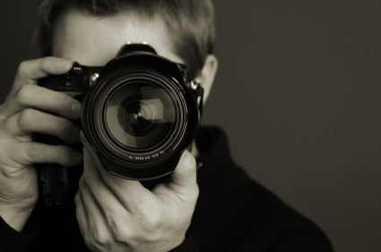

Photography Mania
Photography is the science, art and practice of creating durable images by recording light or other electromagnetic radiation, either electronically by means of an image sensor, or chemically by means of a light-sensitive material such as photographic film.
The word "photography" was created from the Greek (photos), "light" and (graphe) "drawing" together meaning "drawing with light".